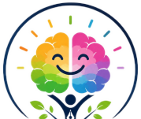

Happy Minds · PrivacyHow we look after your child's information
Draft: the highlighted details are to be filled in, and the wording is to be checked before schools start.
Who we are
The Happy Minds portal is run by [organisation name and address] for the Happy Minds English communication programme in partner schools. For any question about this page, or to ask to see, correct or delete information, write to [contact email].
What we keep, and why
| Information | Why we keep it |
|---|---|
| Student's name, class and school; a username and password for the student and one parent | So the child and parent can sign in, and teachers know whose work is whose. |
| What the class has done: chapters, sessions, holidays | To plan and follow the programme. |
| The child's activity in their Learning Space: practice, Fix It work, badges, points and time used each day | To show progress to the child, parent and teachers, and to keep use to one hour a day. |
| Stories the child writes, with the feedback they receive; photos of handwritten pages | To give kind feedback and show the child's writing over the year. |
| Trainers' notes and day reports; observations of trainers and teachers | To run the programme well. These are for Happy Minds staff only. |
We don't ask for dates of birth, home addresses, phone numbers of children, or photos of children. Please don't write these in stories or notes.
Who can see it
- The child sees their own Learning Space. The parent sees their own child's report. Neither can see other children's records.
- The class teacher and the Happy Minds trainer see the classes they teach.
- Happy Minds coordinators, management and admin see all classes, to run the programme.
- The school's management (Principal, Chairman, Correspondent) can see facts about their own school's classes through a private link. It shows class progress, and the Class Star of the Month by first name and initial.
- The public school portfolio (a QR code in the book) shows only totals, chapters completed, and stories a teacher has chosen to show, with the child's first name and initial only and no photo. A parent can ask for their child's story to be taken off at any time.
Access is controlled by each person's login; the database itself checks who may read what.
Help from AI
To read handwritten stories and give feedback, and to tidy trainers' notes into a report, the portal sends that text or photo to an AI service (Anthropic's Claude). It is used only to produce the feedback or report. Under Anthropic's commercial terms, this information is not used to train their models. Stories are sent without the child's name. Trainers' notes may mention children by first name, for example under “star performers”.
How long we keep it
- Photos of handwritten stories scanned in class: deleted after 7 days. Photos a child sends from home are read for feedback and not kept at all. The story text and feedback stay.
- Everything else: for as long as the child is in the programme, and then [e.g. until the end of the following school year], after which it is deleted.
- A parent can ask for their child's logins, stories or whole record to be deleted sooner.
Consent
Because the students are children, we ask schools to collect a parent's consent before a child's details are added, and before any story is shown on the public portfolio. A parent may withdraw consent at any time by contacting the school or [contact email].
Keeping it safe
- Every page uses a secure (https) connection, and passwords are stored only in scrambled form.
- The portal remembers that you are signed in on your device, so you don't have to sign in on every page. There are no adverts and no tracking.
- Sign out on shared computers, and keep login slips somewhere safe.
Your choices
Parents can ask to see, correct or delete their child's information, or to take a story off the portfolio. Write to [contact email], or ask the class teacher, and we will reply within [e.g. 7 days].